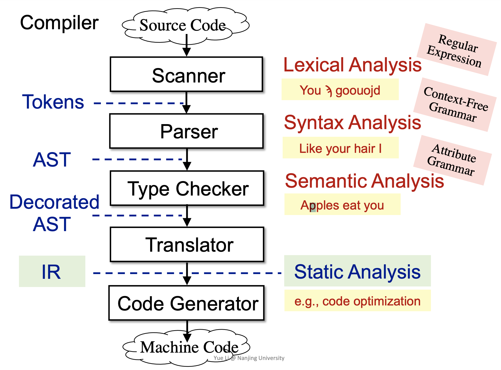
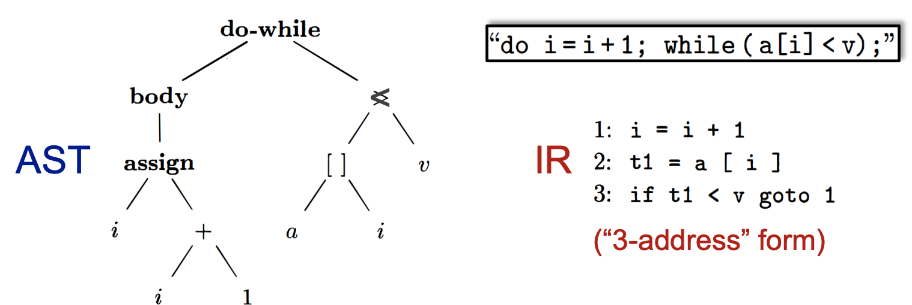
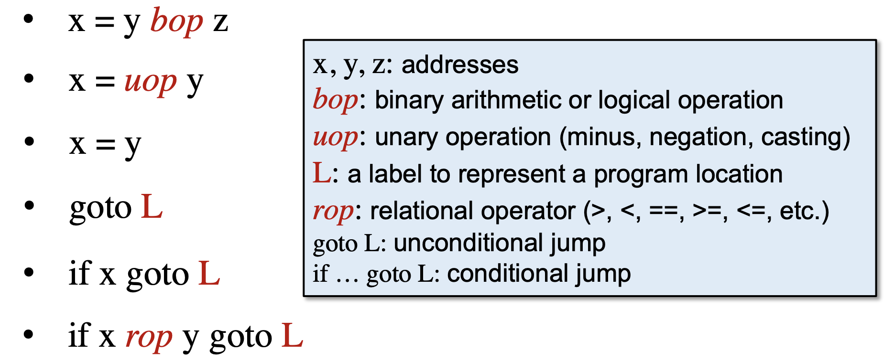
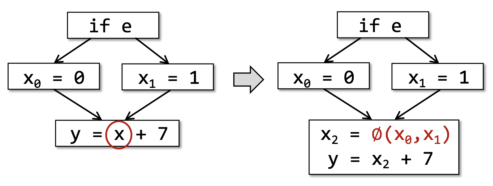
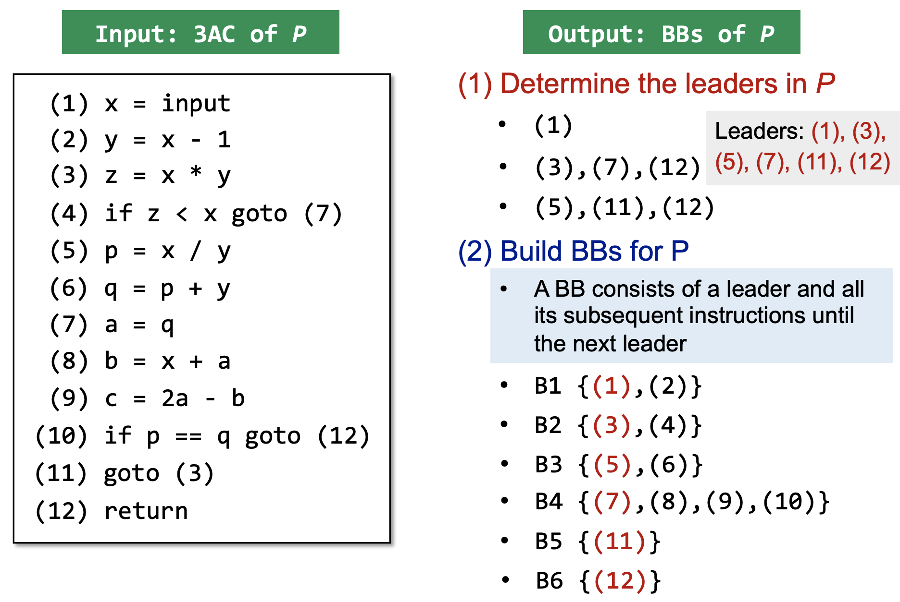

Static Program Analysis (Intermediate Representation)
编译器和静态分析器
编译器（Compiler）将源代码（Source code）转换为机器代码（Machine code），步骤如下：
- 词法分析器（Scanner）：结合正则表达式（Regular Expression），通过词法分析（Lexical Analysis）将源代码转换成 Tokens
- 语法分析器（Parser）：结合上下文无关文法（Context-Free Grammar），通过语法分析（Syntax Analysis）将 Tokens 解析为抽象语法树（Abstract Syntax Tree, AST）
- 语义分析器（Type checker）：结合属性文法（Attribute Grammar），通过语义分析（Semantic Analysis）将 AST 解析为 Decorated AST
- 翻译器（Translator）：将 Decorated AST 翻译成三地址码这样的中间表示（IR）
- 代码生成器（Code Generator）：将 IR 转换成机器码
静态分析器则是基于 IR 做静态分析（如代码优化）。
AST vs. IR
AST
- high-level 且贴近语法结构
- 通常是依赖于语言的
- 适合快速的类型检查进行语义分析
- 缺少控制流信息
IR
- low-level 且贴近机器码
- 通常是独立于语言的（语言无关性）
- IR 形式简洁且统一
- 包含控制流信息
因此，IR 通常作为静态分析的基础。
三地址码
三地址码（Three-Address Code, 3AC）是一种常用的 IR，三地址码中每一条指令的右侧最多只能有一个操作符，因此通常需要引入中间变量。
t = a + b + 3 |
每一个三地址码最多只有3个地址，地址可以是：
- 变量名（Name）：a, b
- 常量值（Constant）：3
- 编译器生成的临时变量（Compiler-generated temporary）：t1, t2
常见的三地址码的形式：
Soot
Soot 是 Java 中最流行的静态分析框架，Soot 中的一种常用 IR 是 jimple，它是一种类型化的、三地址的、基于语句的中间表示（typed, 3-addresses, statement based IR），用于简化 Java 字节码以便于分析。
jimple 中共有4中函数调用：
- specialinvoke: call constructor, call superclass methods, call private methods
- virtualinvoke: instance method calls (virtual dispatch)
- interfaceinvoke: cannot optimization, checking interface implementation
- staticinvoke: call static methods
Java7 引入了 dynamicinvoke
method signature（方法签名）：class name: return type method name(parameter1 type, parameter2 type, …)
init vs. clinit
- init 是类的默认构造函数
- clinit 是类的静态初始化函数
SSA*
在 SSA（Static Single Assignment，静态单赋值） 中每一个变量赋值都会用不同的名称。
- 每个变量定义用一个新的名称
- 后续使用中选择最新的变量
- 每一个变量只有一个定义
3AC | SSA |
当变量在程序控制流的汇聚点使用时，会存在多个变量的问题。
这时会引入一个特殊的合并操作符 φ，φ(x0, x1) 会根据控制流的真实路径确定选择哪一个变量。
SSA 的优势：
- 控制流信息间接地集成到了唯一的变量名中
SSA 能够帮助到一些简化分析，如控制流不敏感分析（速度快但精度差） - 变量的定义和使用是显式的
在一些请求式的任务中，数据的存储和传输会更加高效
有些优化基于 SSA 效果更好（如条件常量传播，全局变量编号等问题）
SSA 的缺点：
- SSA 会引入太多的变量和 φ function
- 在转换为机器码时会引入低效率的问题（如大量的复制操作）
Basic Blocks (BB)
基本块是满足以下性质的最大的连续三地址码指令集合：
- 只存在一个入口，即块中的第一条指令
- 只存在一个出口，即块中的最后一条指令
如何构建基本块：
-
输入：程序 P 的三地址码序列
-
输出：程序 P 的基本块
-
方法：
-
确定程序 P 中的 leaders
- 程序 P 的第一条指令是一个 leader
- 任何跳转的目标指令是一个 leader
- 任何跳转指令的下一跳指令是一个 leader
-
构建程序 P 的基本块
- 一个基本块包含一个 leader 及其后续的指令，直到下一个 leader
-
🌰
Control Flow Graph (CFG)
CFG 中的节点是基本块，CFG 的构建流程：
- 从基本块 A 到基本块 B 添加一条边
- A 的结尾有一条指向 B 的跳转指令
- A 的结尾紧接着 B 的开头且A的结尾不是一条无条件跳转的指令
- 将跳转指令的标号转换为基本块的标号
若 A -> B，则称 A 是 B 的前驱（predecessor），B 是 A 的后继（successor）
构建好基本块后，需要额外添加两个节点 —— 入口（Entry）和出口（Exit）
- 这两个指令不对应任何 IR
- 入口有一条边指向包含第一条 IR 指令的基本块
- 如果一个基本块中包含 IR 中的最后一条指令，那么存在从这个基本块到出口的一条边